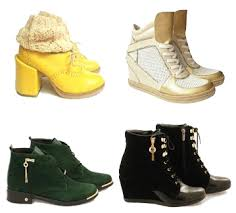

Демисезонная обувь
Демисезонная женская обувь – для тех, кто ценит качество, утончённость и универсальность Универсальность предметов гардероба позволяет использовать их в любой сезон. Демисезонная женская обувь относится к таким вещам, а купить её наиболее выгодно в Украине предлагает интернет-магазин Pishohid.com.ua, цены в котором доступны, а доставка предоставляется по всем крупным городам – в Харьков, Днепропетровск, Киев и другие. Уникальность таких элегантных вещей заключается в том, что они совмещают в себе универсальность, внешнюю привлекательность и удобство. Благодаря таким особенностям каждая девушка может купить демисезонную женскую обувь, которая сделает её образ стильным, а также обеспечит удобство в разное время года. Все товары такого типа, представленные на сайте, отличаются высочайшим качеством, что является гарантией их долговечного использования без возникновения проблем. Демисезонная женская обувь производится в широком разнообразии, и при этом всегда имеет привлекательный и оригинальный дизайн. Это позволяет каждой представительнице прекрасного пола выглядеть неотразимо, независимо от времени года и обстановки. Женская демисезонная обувь – стильная универсальность в любую погоду Женская демисезонная обувь представлена различными моделями – это туфли, ботильоны, сапоги, балетки, кроссовки, кеды и другие. Все они производятся из надёжных материалов – натуральной кожи, кожзаменителя и текстиля, но в любом случае остаются качественными и долговечными. Также демисезонная женская обувь выпускается в оригинальном и привлекательном дизайне, что делает каждую пару идеальным дополнением к индивидуальному образу девушки. Подобное разнообразие позволяет всем представительницам прекрасной половины человечества приобрести именно те модели, которые полностью соответствуют абсолютно всем личным представлениям о моде и стиле.